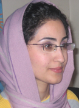

پذيرش > سایت نوشته ها > خانواده، ابزار کنترل و سرکوب دانشجویان دختر
 تبعیض جنسیتی تبعیض جنسیتی

 خانواده، ابزار کنترل و سرکوب دانشجویان دختر خانواده، ابزار کنترل و سرکوب دانشجویان دختر
1 دی 1387 - کمیسیون زنان دفتر تحکیم وحد / نسیم سرابندی - نسخه قابل چاپ
تجربه زندگی دور از خانواده بسیاری از دختران دانشجو ساکن خوابگاه های دانشجویی آمیخته با سیطره گسترده و بی حد و مرز مسئولین دانشگاه و والدین بر زیست روزمره آنان است. آن هنگام که برای هر تأخیر فرمی پر کرده و از خوابگاه با خانواده تماس می گیرند، آن هنگام که بسته هایی حاوی مشاوره از دانشگاه به منازل دانشجویان می فرستند و از ناکامی های دختران دانشجو در زندگی مستقل می گویند یا وقتی که برای توقف هر فعالیت دانشجویی با خانواده های دختران تماس می گیرند، مبادله پنهان نهاد دانشگاه و خانواده عیان می شود. دخترانی که نظارت بر آنان در نبود والدین به دست دانشگاه سپرده شده، دخترانی که هر شب طعم شیرین استقلال موقتی و متزلزل فعلی با تلفن های پدر و مادر به تلخی بر دنیایشان چیره می شود. ایدئولوژی خانواده سخت پابرجاست، دانشگاه، کار، زندگی مستقل نمی شناسد. پدر نه تنها برای ازدواج که دیگر برای تحصیل موافقت نامه کتبی باید تحویل دولت دهد و جابجایی دختران دانشجو از پس طرح بومی گزینی جنسیتی چنان سخت خواهد شد که رویای تغییر را از آینده دختران می شوید و با خود می برد.
فضای برخورد با فعالین دانشجویی دختر متفاوت گشته و کمیته انضباطی و ... همراه با کنترل غیرآشکار والدین فعالانه حضور دارند. این خانواده است که دختران را کنترل می کند. احضار یا بازداشتی کافیست تا در پس آن تنها با پدر و مادر تماسی گرفته شود از حراست و ...-خیرخواهانی که صلاح ما را بهتر می دانند!- و دیگر از آن دختر دانشجوی فعال خبری نمی شود. او هم دغدغه هایش را رها کرده و تن می دهد به فرمانبری از خانواده. پدر می گوید: «حتی اگر اسمت را در نشریه دانشجویی ببینم باید برگردی به خانه چه برسد به کمیته انضباطی و ...» راه برگشتی نیست. حیات دختران به حمایت خانواده وابسته است، پول توجیبی در دست پدر است، قدرت و منزلت از آن اوست و گردن نهادن از آن دختران. ترس از طرد شدن برای دختران از آرزوها و آرمان ها پر زورتر است. آیا خانواده مقصر است؟ پس تکلیف کسانی که با والدین تماس می گیرند چه می شود؟ ساختار پدرسالار در اینجا نقش پر رنگی ایفا می کند. سلطه نهفته در رابطه والدگری و فرزندی نرم و پنهان جریان دارد و آنان که در پی متوقف کردن دختران دانشجویند این را خوب می دانند.
اگر برای آنکه ساعت خوابگاه تغییر کند امضا جمع کنی به کمیته انضباطی نخواهی رفت بلکه برای پدرت نامه می فرستند. اگر حتی بخواهی از قوانین خوابگاه و دانشگاه سرپیچی کنی با خانواده ات تماس می گیرند و در پی هر تماسی از خطری که در کمین دختران نهفته است می گویند... از جامعه نا امن که دیگر این روزها خودشان ناامنش ساخته اند سخن می رانند... خانواده را از شهر تاریک و متجاوز می ترسانند... از روابط و رفتارهای آن چنانی دختران حتی دروغ می گویند... ابزار کنترل و سرکوب جدیدی کشف شده. دختران دانشجوی خواجه نصیر را بازداشت کرده و از پدید آمدن آینده ای نامعلوم برایشان می ترسانند. ولی با شرمساری و تأسف فراوان باید از ورود شبانه شان به منزل دختران دانشجوی تهران در شب تجمع 16 آذر گفت که بی پروا جای جای خانه را گشتند و بی هراس از بازخواستی، آنچه از آن صاحبخانه بود و نبود با خود بردند.
به جای برخورد علنی و شفاف که همواره می توان به آن استناد کرد حوزه خصوصی دختران دانشجو مورد هجوم قرار گرفته و به خانواده ها کشانده شده و در کنار احضار به کمیته های انضباطی و بازداشت روند جدیدی را طی می کند. در همین گیر و دار است که یکی از جامعه شناسان از زنانه شدن فضای دانشگاه می گوید و آن را مساوی با سرد شدن و کاهش فعالیت های سیاسی دانشجویی می خواند! (سخنرانی عباس کاظمی در نشستي با عنوان «جنبش دانشجويي و نقش آن در جامعه» در دانشکده جغرافیا دانشگاه تهران) کارشناسان به جای توجه به علل متعدد دیگر مثل لایه های پنهان سرکوب، کنترل و سلطه دولت و خانواده مردسالار بر زنان، فردیت و هویت اجتماعی نداشته دختران دانشجو تا پیش از ورود به دانشگاه که یکی از مولفه های مهم در نوع فعالیت آنان است، صرفا زنان را مقصر می دانند. آنان به جای ریشه یابی بی اعتنایی حاکم شده بر جامعه که بر دانشگاه هم تأثیر گذاشته، به جای توجه به برخورد های سیل آسا با دانشجویان و بالا رفتن هزینه هر گونه فعالیتی فقط انگشت اشاره را به سوی دختران می گیرند و تأکید می کنند دختران فضاها را زنانه کردند و حتما بعد از آن رمانتیک ساخته اند! این زنانند که جنبش های مردانه و پویا را از تحرک بازداشتند و شجاعت و جسارت نقد و اعتراض را نابود ساخته اند!
تحلیل های زنده و عمیق کارشناسان آن چنان راهگشا و واقعی ست که نمی دانم چرا جنبش دانشجویی تا این حد معطل خود مانده و راه رهایی را نمی یابد؟! آیا رکود دانشگاه را محصول ورود دختران به آموزش عالی دانستن، بازتولید همان گفتمانی نیست که حضور زن را در عرصه عمومی نمی پذیرد و برای نپذیرفتن زنان در دانشگاه و جامعه توجیهاتی چون عدم شرکت آنان در فعالیت های پویا را وسط می کشد؟ آیا این همان جمله ی کلیشه ای «زنان اعتصاب شکنند» نیست که قیچی می شود برای حذف؟ آیا این فرض که بی تفاوتی سیاسی زنان صرفا به دلیل ویژگی های روانشناختی، فرهنگی و جامعه پذیری آنان است و در نهایت به همین دلیل فعالیت های سیاسی دانشجویی تنزل یافته، غفلت کردن از نقد ساخت قدرت و نحوه سازماندهی سیاسی دانشجویان نیست؟ ساختاری که می تواند مانعی بزرگ بر سر راه فعالیت دختران باشد. این ساختار مردسالار است که می گوید زنان به دلیل ویژگی های روانی محافظه کارند پس محیط دانشجویی را از تحرک باز می دارند، راه حل را هم در این می جویند که باید از ورود آنان به دانشگاه ها جلوگیری کرد. توجیهاتی که در اجرای طرح هایی چون سهمیه بندی و بومی سازی جنسیتی از آنان استفاده می شود.
البته جای طرح این سوال باقی ست که تعریف فعالیت دانشجویی چیست؟ دختر دانشجویی که در کانون های فرهنگی، اجتماعی و هنری و یا انجمن های علمی فعال است، در زمره این فعالیت ها نمی گنجد؟ آیا تنها شرکت در تجمعات و اعتراضات فعالیت است؟ گرچه موارد بسیاری را هم می توان از دانشجویان دختر دانشگاه های مختلف ذکر کرد که در همین تحصن ها، اعتراضات صنفی و یا سیاسی شرکت داشته اند. (رجوع شود به مقاله «حضور حذف ناشدنی دختران دانشجو» از نگارنده) اما عمده و مهم پنداشتن فعالیت سیاسی دانشجویان و محدود ساختن آنان به همین حوزه نقدی ست که از سوی صاحبنظران طی سال های گذشته فراوان بر جنبش دانشجویی وارد شده و حال که دانشجویان زمینه فعالیتشان را متکثر ساخته و تنوع بخشیدند و از ایفای نقش سیاسی کمی خارج شدند، باز هم این دخترانند که همه کاسه و کوزه ها بر سرشان شکسته می شود. رشد تشکل های مختلف با کارکردهای گوناگون فضای فعلی دانشگاه را بس متفاوت از گذشته ساخته است. تلاش برای تغییر نه تنها به نقد قدرت و دولت که به نقد جامعه و فرهنگ نیز معطوف گشته است. شاید از دید کارشناسان تجمعات کمتری برگزار شود (گرچه آمارها چنین امری را تأیید نمی کند) که غیر از عامل سرکوب، خارج شدن آگاهانه دانشجویان از قالب فعالیت صرفا سیاسی نیز در آن موثر است، اما این معیار مناسبی برای ارزیابی میزان فعالیت سیاسی دانشجویان نیست. تغییر ترکیب جمعیتی دانشگاه ها می تواند یکی از عوامل موثر در دگرگونی نوع و شیوه فعالیت ها و فضاهای علمی باشد اما این تحول را نبایست الزاما منفی پنداشت.
در این میان ارائه تعریف دوباره از نوع فعالیت زنان در دانشگاه ها با همه فشارها و تهدیدهای آشکار و نهان موضوعی ست که جای پرداخت بیشتری دارد. زمانی که حضور دختران در تجمع 16 آذر جلب توجه می کند، این شرکت فعالانه و موثر دختران و طرح مطالبات خود و جنبش زنان، نشاندهنده تحولی در شکستن فضای مردانه است. دختران همان گونه که در اعتراضات حضور دارند، در نشریات، کانون ها و انجمن ها نیز در پی ایجاد تغییرات هستند. دست کم گرفتن و یا حتی چشم بستن بر کنترل شدیدی که دختران دانشجوی فعال می شوند تحلیل ها را دچار اشتباه کرده است. گذشته از فعالین دختر این دانشجوهای غیر فعال هم هستند که تمام لحظاتشان آکنده از سایه قیم مآبانه مسئولین است، خانواده ای که این نظارت را به دولت تفویض کرده. آنان در خوابگاه و دانشگاه با وجود دشواری های فراوان زندگی می کنند و فردیتشان را شکل می دهند.
کمیسیون زنان دفتر تحکیم وحدت
ارسال به
بالاترین
،
توییتر
،
فریندفید
،
فیسبوک
در همين بخش :
 یک خبر تلخ؟ یک قانونشکنی؟ یک تصمیم بخشنامهای جدید؟ یک خبر تلخ؟ یک قانونشکنی؟ یک تصمیم بخشنامهای جدید؟
چرا بایست به سکسوالیته پرداخت؟ / نفیسه آزاد
آزارجنسی خانگی؛ «قربانی» نه، «نجات یافته»
زنان، بزرگترین بازندگان بهار عرب
سانسور از دیدگاه جنسیتی/الهه امانی
ديگر بخش ها :
طرح یک میلیون امضا
|
مقالات
|
سایت نوشته ها
|
اخبار
|
گزارش كمپين
|
گفت و گو
|
علیه سکوت
|
كوچه به كوچه
|
نامه های شما
|
گزارش ویژه
|
گفتگو با اعضا
|
ویژه سالگرد کمپین
|
تصویر برابری
|
دل آرام علی
|
تریبون
|
مقالات
|
تاریخ شفاهی
|
خارج از چارچوب
|
کتابخانه
|
درباره کمپین
|
کمپین در شهرها
|
کمپین در بند
|
صدای تغییر
|
ویژه 22 خرداد
|
لایحه حمایت از خانواده
|
گالری
|
عشا مومنی
|
امیر یعقوبعلی
|
خدیجه مقدم
|
راحله عسگری زاده و نسیم خسروی
|
پروین اردلان،جلوه جواهری، مریم حسین خواه، ناهید کشاورز
|
زینب پیغمبرزاده
|
سعیده امین، سارا ایمانیان، محبوبه حسین زاده، ناهید کشاورز و همایون نامی
|
احترام شادفر
|
نسیم سرابندی زاده،فاطمه دهدشتی
|
وبلاگ مهمان
|
پرونده خرم آباد
|
دستگیری ها
|
مریم مالک
|
پرستو اللهیاری
|
مهرنوش اعتمادی
|
سمیه رشیدی
|
Other Languages
|
همراهان
|
«فراخوان کمپین ده روز با بهاره هدایت»
| English
|